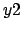
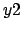
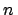

Next: 3.4.2 Text Labels Up: 3.4 Sundry Items (Arrows, Previous: 3.4 Sundry Items (Arrows, Contents Index
Arrows may be placed on plots using the set arrow command, which has similar syntax to that used by gnuplot. A simple example would be:
set arrow 1 from 0,0 to 1,1
The number `1' immediately following `set arrow' specifies an identification number for the arrow, allowing it to be subsequently removed via:
unset arrow 1
set noarrow 1
In PyXPlot, this syntax is extended; the set arrow command can be followed by the keyword `with', to specify the style of the arrow. For example, the specifiers `nohead', `head' and `twohead', after the keyword `with', can be used to make arrows with no arrow heads, normal arrow heads, or two arrow heads. `twoway' is an alias for `twohead'. For example:
set arrow 1 from 0,0 to 1,1 with nohead
In addition, linestyles and colours can be specified after the keyword `with':
set arrow 1 from 0,0 to 1,1 with nohead \ linetype 1 c blue
As in gnuplot, the coordinates for the start and end points of the arrow can be
specified in a range of coordinate systems. `first', the default,
measures the graph using the  - and
- and  -axes. `second' uses the
-axes. `second' uses the  -
and -axes. `screen' and `graph' both measure in centimetres
from the origin of the graph. In the following example, we use these
specifiers, and specify coordinates using variables rather than doing so
explicitly:
-
and -axes. `screen' and `graph' both measure in centimetres
from the origin of the graph. In the following example, we use these
specifiers, and specify coordinates using variables rather than doing so
explicitly:
x0 = 0.0
y0 = 0.0
x1 = 1.0
y1 = 1.0
set arrow 1 from first x0, first x1 \
to screen x1, screen x1 \
with nohead
In addition to these four options, which are those available in gnuplot, the
syntax `axisn' may also be used, to use the th  - or
- or
 -axis - for example, `axis3'. This allows arrows to reference any arbitrary axis on plots
which make use of large numbers of parallel axes (see
section 3.3.1).
-axis - for example, `axis3'. This allows arrows to reference any arbitrary axis on plots
which make use of large numbers of parallel axes (see
section 3.3.1).